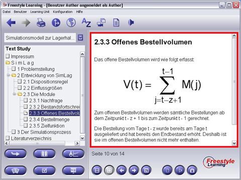

Der große Bereich auf der rechten Seite des Bildes wird dazu verwendet, den Inhalt eines aus dem Strukturbaum gewählten Learninng Unit View-Elementes anzuzeigen. Wie der Lerninhalt angezeigt wird, hängt von der Unterstützung der Perspektive (View) ab. Um mit dem gewählten aktuellen Inhalt zu arbeiten, können die Schaltflächen aus dem Interaktionsleiste (Interaction Panel), unterhalb des Content Panels, verwendet werden.

Zurück zur Hauptseite